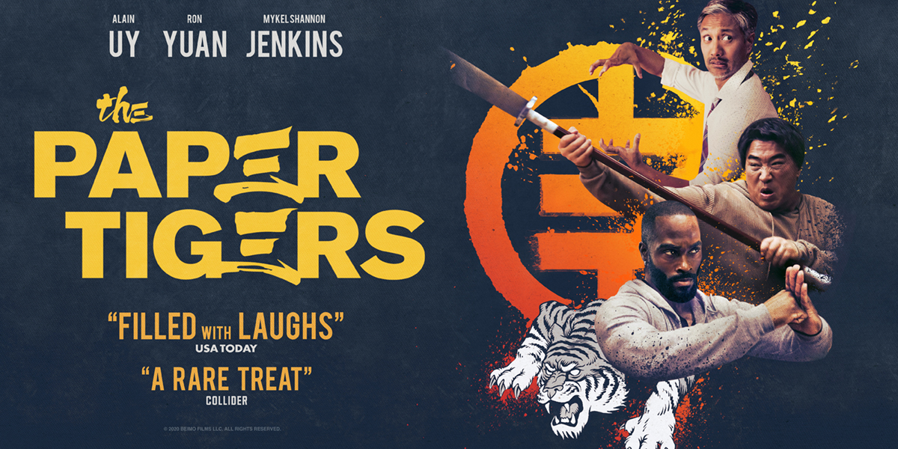

The Paper Tigers
Plot
Three childhood kung fu prodigies have grown into washed-up, middle-aged men—now one kick away from pulling their hamstrings. But when their master is murdered, they must juggle their dead-end jobs, dad duties, and overcome old grudges to avenge his death.
The film was created due to director and producers' strong admiration of martial arts and old school, fun martial art films. The director Bao Tran began writing the film treatment for this concept in 2011. The inspiration for the movie came from his classmates and friendships when he studied martial arts.
Showcasing Times::
- 9h00am : Cinema 1
- 11h00am : Cinema 2
- 14h00am : Cinema 3
WHERE WILL YOU FIND IT
Cinema located iin C24